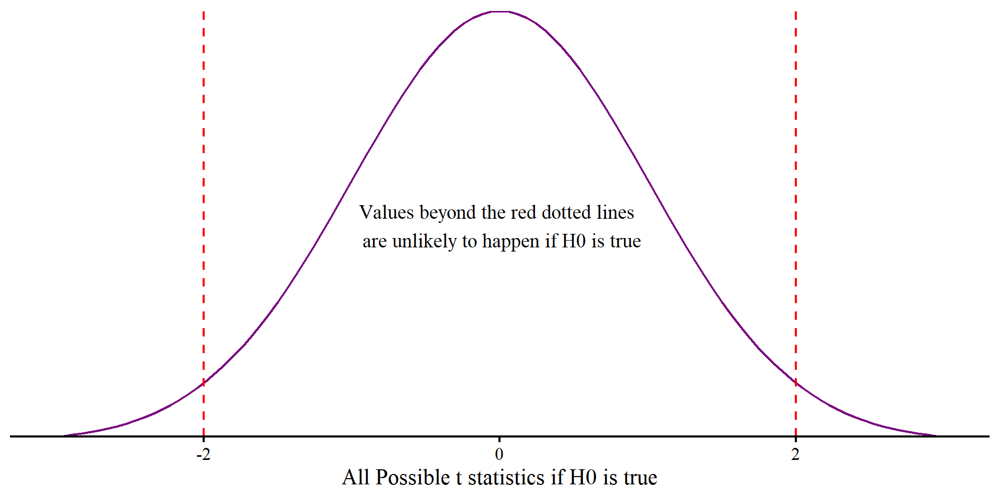
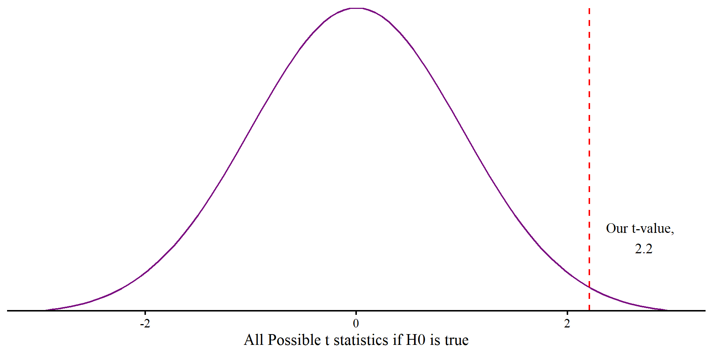
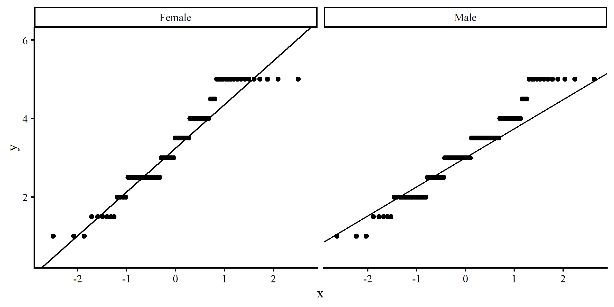

PSYC 6802 - Introduction to Psychology Statistics
The effectsize package (Ben-Shachar et al., 2025) provides functions that compute effect sizes for a wide variety of effect sizes that are commonly used in statistical analyses.
Today we will work with the Cuisine_rating.csv data, which is a collection of ratings of different restaurants by 200 customers:
In general, t-tests are used to test whether some number is significantly different from some value (0 in 99% of the cases). In this Lab, we will look at the specific case where we use t-tests to check whether some mean differences are significantly different from 0.
These “different” t-tests are more or less the same. They all do the same thing, save for a small nuance.
The overarching idea is that we have some value, usually a mean, and we want to test whether it is significantly different from some other value, usually 0.
The main component that we need to do this is the variance (or SD, same thing) of the mean. How this variance is calculated is the nuance. See here for a good explanation.
For t-tests we need to calculate what is know as the t statistic. The formula to calculate any t statistic is:
\[t = \frac{\bar{x} - \mu }{S/\sqrt{n}}\]
where:
The \(S/\sqrt{n}\) is what is known as the standard error, \(SE\), an essential concept to understand before p-values can make any sense.
The \(SE\) is the standard deviation of the sampling distribution (makes no sense, I know 🫣):
Let’s say that you collect some data and then calculate some mean, \(\bar{x}\). And then, let’s say that in some imaginary reality you are able to re-collect the data in the exact same way an infinite number of times. Each time you collect the data you calculate \(\bar{x}\) in the same way, eventually ending up with a distribution of \(\bar{x}_s\).
This imaginary distribution of \(\bar{x}\)s is the sampling distribution.
\[SE = \frac{\sigma}{\sqrt{N}}\]
In the case of \(t\)-tests, the null hypothesis assumes some null value, \(\mu\), and checks how unlikely it is to get the sample mean value, \(\bar{x}\) if \(\mu\) is the true population mean.
This would be impossible to do unless we somehow had an estimate of the standard deviation of \(\mu\), which is exactly what \(SE\) is! We can rewrite the general \(t\) statistic formula as \(t = \frac{\bar{x} - \mu }{SE}\). Also, in most cases \(\mu = 0\), so, more often than not, the formula becomes
\[t = \frac{\bar{x}}{SE}\]
Thus, \(t\) can be roughly interpreted as how many standard deviation units \(\bar{x}\) is away from \(\mu\). The p-value will be how unlikely \(\bar{x}\), or something more extreme, is to happen if \(\mu\) is the true population mean.
ggplot() +
geom_function(fun = dt, args = list(df = 199), color = "#7a0b80") +
labs(x = "All Possible t statistics if H0 is true") +
xlim(-3, 3) +
geom_vline(xintercept = 2, lty = 2, col = "red") +
geom_vline(xintercept = -2, lty = 2, col = "red") +
annotate("text", x = 0, y = .2, label = paste("Values beyond the red dotted lines \n are unlikely to happen if H0 is true"), size = 5) +
scale_y_continuous(expand = c(0,0)) +
theme(axis.title.y=element_blank(),
axis.text.y=element_blank(),
axis.ticks.y=element_blank(),
axis.line.y = element_blank())
We want to find out whether the average food rating (Food_Rating) is significantly different from 3. Then:
The p-value represents how likely seeing \(t = 2.2\) would be if the null hypothesis, \(H_0\), is true, in which case we would expect \(t = 0\).
If \(H_0\) is true, we should see \(t = 2.2\) or more extreme in \(2.8\%\) of the samples (\(p = .028\)).
Is this enough evidence to “reject” \(H_0\)? There is no objective answer to this question (and p < .05 is not an objective answer).
ggplot() +
geom_function(fun = dt, args = list(df = df), color = "#7a0b80") +
labs(x = "All Possible t statistics if H0 is true") +
xlim(-3, 3) +
geom_vline(xintercept = t, lty = 2, col = "red") +
annotate("text", x = t + .5, y = .1, label = paste("Our t-value, \n", round(t, 2)), size = 5) +
scale_y_continuous(expand = c(0,0)) +
theme(axis.title.y=element_blank(),
axis.text.y=element_blank(),
axis.ticks.y=element_blank(),
axis.line.y = element_blank())
In practice, you would use the t.test() function to run a one-sample t-test.
Some notes about the code:
dat$Food_Rating: this is the column in the data that we want to run the t-test for.
mu = 3: the mu argument is used to specify the null population mean; it’s set to 0 by default, so you only have to specify a value when you are testing against a value that is not 0.
So, the average food rating is significantly different from 3 at \(\alpha = .05\), \(t(199) = 2.2\), \(p = .02\), \(95\% \mathrm{CI}[3.03; 3.42]\).
However, we do not know how practically large the difference from 3 is. We need an effect size 😀
Cohen’s d is essentially a measure of the standardized mean difference between the observed and null mean. In the case of the one-sample t-test
\[d = \frac{\bar{x} - \mu}{S}\]
For the case of our sample, d is
According to Cohen (1988):
So, the difference between the observed mean is not that meaningful according to Cohen’s guideline (but once again, practical meaningfulness may depend on the context).
To put what d does in perspective, think of it as standard units differences. On an IQ test scale, a jump from 100 to 115 would be exactly \(d = 1\), a standard deviation difference.
Oh, also, Cohen’s d formula is very similar to the t statistic formula. Coincidences? 🤔
effectsizeWe can also use the effectsize package to compute Cohen’s d, which has the advantage to provide some extra information
Cohen's d | 95% CI
------------------------
0.16 | [0.02, 0.30]
- Deviation from a difference of 3.Notice that once again we need to specify the value we are testing against, 3, which is otherwise 0 by default.
The function has the advantage of also computing the 95% confidence in interval for Cohen’s d.
confidence intervals interpretations
The second interpretations seems complicated for no reasons, but we have frequentist statistics and p-values to thank for that. If you are curious to get a sense of the nuance, here is a good explanation.
We Want to test whether individuals’ mean ratings on service and food are significantly different from each other. Because each individual is measured on both variables, the two columns are dependent:
This is one way of running a paired-saples t-test:
Paired t-test
data: dat$Service_Rating and dat$Food_Rating
t = 0.07089, df = 199, p-value = 0.9436
alternative hypothesis: true mean difference is not equal to 0
95 percent confidence interval:
-0.2681717 0.2881717
sample estimates:
mean difference
0.01 I personally prefer to run paired-samples t-tests this way:
One Sample t-test
data: dat$Service_Rating - dat$Food_Rating
t = 0.07089, df = 199, p-value = 0.9436
alternative hypothesis: true mean is not equal to 0
95 percent confidence interval:
-0.2681717 0.2881717
sample estimates:
mean of x
0.01 This works because paired-samples t-tests are just one-sample t-tests on the difference between the two variables where \(H_0: \mu = 0\).
While there is no mathematical difference between the one-sample and the paired-samples t-test, the independent-samples t-test differs by the fact that you are comparing two independent samples.
From undergrad you may remember the pooled variance, \(S_p^2\). In rough terms, the pooled variance is an average of the two groups variances weighted by their sample sizes.
\[S_p^2 = \frac{(n_1 - 1)s_1^2 + (n_2 - 1)s_2^2}{n_1 + n_2 - 2}, t = \frac{\bar{x}_1 - \bar{x}_2}{\sqrt{S_p^2/n_1 + S_p^2/n_2}}\]
The formula to calculate the t-statistic has the exact same logic as before, it is still a mean difference divided by the \(SE\).
These calculations are standard in just about every intro to statistics textbook; however, running a t-test this way makes the assumption that the two groups have equal variances, which is never the case in practice. R functions usually default to running Welch’s t-tests, which are best in practice. The reason you don’t see formulas for Welch’s t-test in textbooks is because calculating the dfs is a bit tedious 🤷
We want to test whether there is a significant difference in mean overall restaurant (Overall_Rating) rating by gender (Gender). The syntax is slightly different here.
Welch Two Sample t-test
data: Overall_Rating by Gender
t = 1.1696, df = 154.21, p-value = 0.244
alternative hypothesis: true difference in means between group Female and group Male is not equal to 0
95 percent confidence interval:
-0.1288966 0.5030181
sample estimates:
mean in group Female mean in group Male
3.335366 3.148305 Notice the Overall_Rating ~ Gender. You can read the ~ syntax as a “by”, and it comes up over and over in R functions.
In this case, Overall_Rating ~ Gender reads something like “Give me the mean of the Overall_Rating variable by each level in the Gender variable and check the difference”.
Importantly, we need to specify where both Overall_Rating and Gender are coming from. We do that with the data = dat argument, which tell R to look inside the dat object.
Below is the independent-samples t-test with the pooled standard deviation, which assumes equal variances.
Two Sample t-test
data: Overall_Rating by Gender
t = 1.2067, df = 198, p-value = 0.229
alternative hypothesis: true difference in means between group Female and group Male is not equal to 0
95 percent confidence interval:
-0.1186291 0.4927506
sample estimates:
mean in group Female mean in group Male
3.335366 3.148305 The two main differences from before is that The t-statistic and the dfs are larger than before. These two differences will also lead to lower p-values, although the difference is quite small in this case.
As mentioned, you should never use the var.equal = TRUE version. But why is it the most common one? I have two guesses:
For independent-samples t-tests, the effectsize package also uses a similar syntax to the t.test() function:
We need to add the pooled_sd = FALSE argument here because by default the function will used the pooled standard deviation. In this specific case, the difference is irrelevant.
In general, always make sure you read the output of functions carefully. both the t.test() and the cohens_d() functions tell use what type of t-test they are running and what standard deviation they are using.
Now for a really complex topic that unfortunately we spend almost no time on in most statistics class. In most cases you will here that statistical models make assumptions; what you will not hear is:
The way we teach statistics does not facilitate the understanding of these concepts, nor tries to address them. The main issues comes down to us teaching how to do statistics but not teaching why we do statistics and what statistics do.
The one thing that I will say is that, fundamentally, statistics try to explain how observed data comes into existence. Because the true process by which data comes into existence is infinitely complex, statistical models make assumptions about the nature of the process that causes data to come into existence.
So, statistical models (yes, the t-test is a statistical model), are a simplified explanations of reality that expect to see certain patterns in the data. Checking assumptions involves evaluating how different the observed data is from what your model would expect.
In the case of Welch’s t-test, the only assumption is that the two groups are normally distributed around their mean. There are multiple ways of evaluating the normality of groups. descriptive statistics are one way.
Here we use group_by() and summarise() in combinations to get descriptive statistics about the distributions of the two groups by Overall_Rating
# A tibble: 2 × 5
Gender mean sd skew kurt
<chr> <dbl> <dbl> <dbl> <dbl>
1 Female 3.34 1.19 -0.0653 -1.05
2 Male 3.15 0.996 0.0990 -0.492Judging by the skewness and kurtosis alone, I would not be very concerned about the non normality of the data.
However, graphical representations are generally much more informative!
QQplots can be good to evaluate whether a variable is not normally distributed and where the deviation from normality happens along the possible values of the variable (see here for more).
QQplots do not work too well for this data because it is not fully continuous. In general, you’d want the line to pass through all the points, or rows of points in this case. These plots don’t look the best.

I personally find density plots more intuitive than QQplots.
We will talk more about outliers later in the course, but if the data is to be normally distributed, one should not expect to see any extreme values. Outliers are unexpected extreme values compared to the rest of the sample.
In Lab 2 we have seen how a single outlier can have a strong influence on the mean. This means that a single outlier could drastically impact your results in t-tests.
The trimmed mean calculates the mean of a variable but removes a percentage of the highest and lowest value. So, if the trimmed mean changes a lot, there may be some outliers lurking in your data.
Here, the means are almost the same, so there does not seem to be any influential outliers.
We can turn any observation \(x_i\) into standardizes units (Z-scores) with the following formula: \[z_i = \frac{x_i - \bar{x}}{S_x}\]
This formula makes it so that an observation that equals the mean will be 0, and the units will be interpreted as SD units away from the mean. We know that something that is 3 standard deviations above or below a mean is very unlikely to be observed (e.g., only .001% of the population will have an IQ above 145).
# A tibble: 2 × 2
Gender N_extreme
<chr> <int>
1 Female 0
2 Male 0Once again, no outliers. We will talk about other outlier detection methods later on in the course.
What we saw on the previous slides is that the Overall_Rating variable really does not seem normally distributed in any of the two groups. In these cases, it is more prudent to run non-parametric tests.
Non-parametric tests usually require less assumptions and their results are more robust when there are some assumption violations. The trade-off (if you like p-values) is that they are always less powerful (see Lab 5) and make it harder to reject \(H_0\). In the case of the t-test, one non-parametric alternative is the Wilcoxon Signed-Rank Test.
It comes as no surprise that the p-value is larger than both of the previous t-tests.
Non-parametric tests
Non-parametric tests are generally a good idea when you have a small sample size. That is because assumptions are more and more likely to be met as sample size increases, and will often be violated in small samples. A rule of thumb is that you probably want to use non-parametric tests when you have groups with \(N < 30\).
PSYC 6802 - Lab 4: t-Test